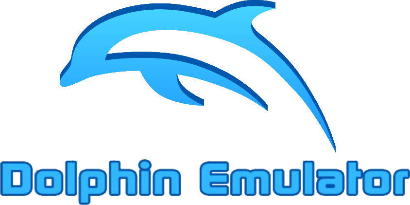

How to install
- Got to Dolphin Emulator's Homepage and download the latest version for your system
- Unzip the master folder and follow the installation process
- Once done, open up Dolphin (recommend using a shortcut on your desktop)
Dolphin can primarily run Gamecube and Wii games. To launch a game, you will need to have that game's ISO file. However, you will need to get an ISO file of your game elsewhere.
Pirating is not advised nor condoned. If you do own one, follow along below to launch it.
- In Dolphin, click on Config
- In the settings menu, click on the Paths tab
- Click Add and locate your ISO's directory folder
- Your game should appear on Dolphin's Menu. It will display the banner for you to click on. It should hopefully launch the game.
If you want to play on a controller, follow these steps here
- In Dolphin, click on Controllers
- Choose a port of your choice, click Configure of that port
- Map the controls to your liking